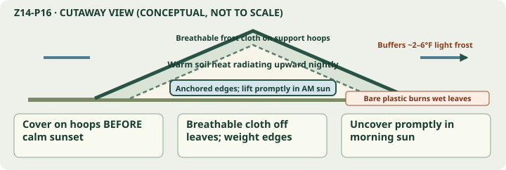

Z14-P16 · Food production and preservation · New manuscript
Protect crops from light spring and autumn frosts safely
Add two to four extra harvest weeks on both ends of a northern season without crushing foliage or creating fire/plastic hazards.
When it applies · Clear calm nights when spring or autumn temperatures dip briefly near 28–34°F.
Equipment · Breathable frost fabric (spunbond row cover), old bedsheets, support hoops, stakes/sandbags, and weather forecast.

Actions
- Drape breathable frost cloth or old cotton sheets over low hoops BEFORE sunset on calm clear frost-warning evenings so covers trap warm soil heat radiating upward—anchoring all edges securely to the ground against wind.[P19]
- Avoid letting thin plastic sheeting touch wet plant leaves directly (plastic conducts freezing cold straight into leaf cells and cooks plants rapidly the next morning); remove or vent covers promptly once morning sun warms air above freezing.[P19]
- Water dry soil lightly the afternoon before a predicted light frost—moist soil absorbs and releases slightly more daytime heat overnight than bone-dry soil—while recognizing simple covers typically buffer only 2 to 6°F and cannot save tender tomatoes in a hard 20°F freeze.[P19]
Failure recognition · Wrapping tender pepper plants tightly in clear plastic bags and forgetting to uncover them during a sunny 55°F morning, boiling the leaves.[P19]
Verify · Confirm breathable cloth supported off foliage before sunset, edges weighted down, and morning uncovering timed promptly.[P19]
Stop or change course · Hard killing freezes (below roughly 25–28°F for tender crops) require harvesting mature and green usable fruit BEFORE sunset rather than relying on thin sheets.[P19, P04]
Evidence and editorial notes
- P04 · University of Minnesota Extension · Harvesting and Storing Home Garden Vegetables (current web edition)
- Section: Harvesting Maturity, Curing, and Post-Harvest Handling · Conditions: Home garden root crops, winter squash, onions, potatoes, and greens
Support: Harvest crops at proper maturity during cool morning hours without bruising, cure storage crops (onions, garlic, winter squash, potatoes) at crop-specific warm/dry conditions before cold storage, and cull any nicked or diseased items for immediate use.
Limitations: A single bruised or rotting vegetable spreads decay rapidly across an entire storage bin. · Conflicting evidence: None; explains why curing precedes long cold storage.
Editorial note: Anchors harvest-to-storage quality gates in Z14. · Specialist reviewer: Post-harvest horticulture specialist
Primary source · checked 2026-11-24 - P19 · University of Minnesota Extension · Planting the Vegetable Garden (current web edition)
- Section: Season Extension, Cold Frames, Seed Saving Limits, and Succession Planting · Conditions: Northern short-season gardens seeking spring/fall harvest extension
Support: Use row covers, low tunnels, or ventilated cold frames to buffer light frosts and stagger fast-maturing crops (succession planting), noting that open-pollinated vs hybrid seeds behave differently if saved and require isolation/dry storage.
Limitations: Unvented plastic tunnels overheat rapidly on sunny spring days and cook tender seedlings within an hour. · Conflicting evidence: None; grounds realistic northern season extension without overpromising winter yields.
Editorial note: Supports northern resilience and seed-planning cards in Z14. · Specialist reviewer: Horticulture and Extension specialist
Primary source · checked 2026-11-24
Source lineage · UMN Extension Vegetable Crop Management; new manuscript · Classification · New manuscript.